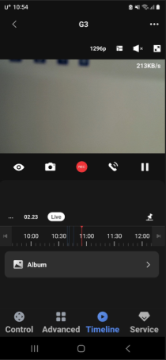
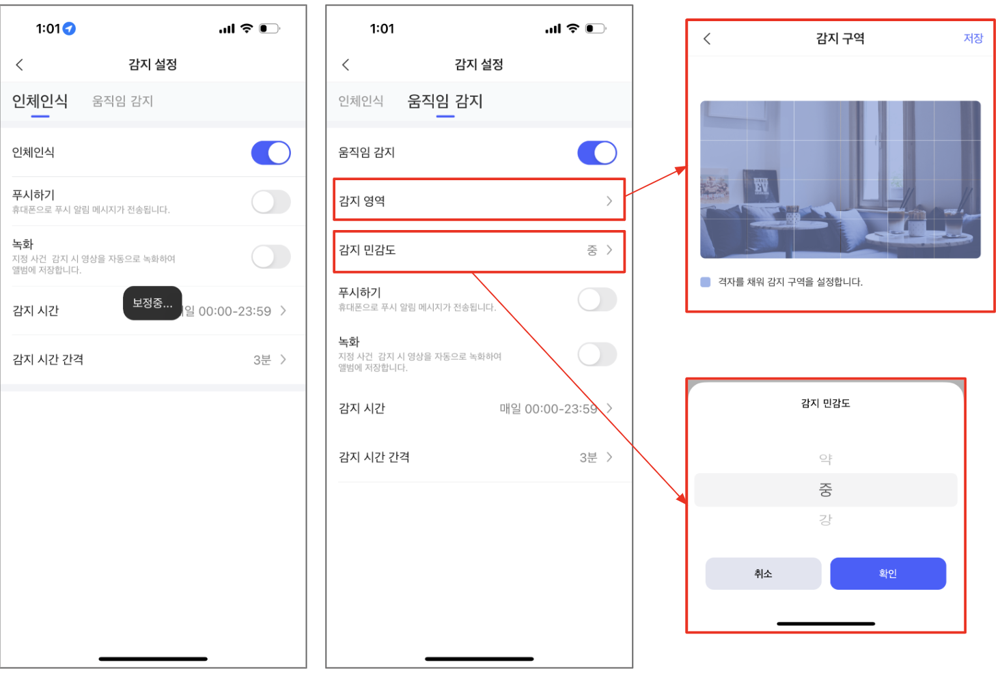

13 스마트 카메라 E1
13.1 설치
질문 2: 카메라 E1은 실외에 설치할 수 있나요?
답변 2:
카메라 E1은 방수가 되지 않으며 외부 장면에서 사용할 수 없습니다.
질문 3: 카메라 E1을 천장에 설치 할 수 있나요?
답변 3:
네, 카메라의 베이스를 천장에 고정하기 위해 확장 나사를 사용할 수 있으며, 그 후에 카메라를 베이스에 고정할 수 있습니다.
질문 4: 기본 액세서리로 카메라 E1을 고정시키는 방법을 알려 주세요.
답변 4:
카메라 E1 포장 상자를 열어보면 내부 지지대의 윗부분에 카메라 E1 베이스 액세서리의 설치 도면이 있습니다. 설치할 때, 먼저 카메라의 표시등을 베이스의 “▲”와 같은 수직선 상에 위치시킨 후, 카메라의 베이스 고정 홈을 베이스의 돌출 부분에 맞추고 삽입한 후, 마지막으로 카메라 베이스를 앞으로 밀어서 “클릭” 소리가 들릴 때까지 밀어 넣으십시오. 고정이 완료됩니다. 이때, 베이스의 “▲”이 카메라의 표시등과 정확하게 일치합니다.
13.2 사용팁
질문 1: 스마트 카메라 E1의 “감지설정”에서 “인체인식” 선택한 상태이고 “감지 시간 간격”이 3분이라는 뜻은 무엇인가요? 그리고, 3분 이하로 제약 되어 있는 이유는 무엇인지요?
답변 1:
스마트 카메라 E1 설정에서 “감지 시간 간격이란”인체인식”을 하는 주기를 의미합니다. 즉, 첫번째 “인체 인식”을 하면, 그 뒤로 감지 시간 간격에 설정되어 있는 시간동안은 더 이상 감지를 하지 않는다는 의미입니다. 감지 시간 간격을 최소 3분부터 설정하도록 한 이유는 감지 주기가 짧을 수록 서버 액세스 빈도 증가로 인한 부하가 커지기 때문입니다.
질문 2: 스마트 카메라 E1 - 주설정 - 외장 메모리카드 설정 - 녹화 설정에는 상시 녹화와 이벤트 녹화 두가지 옵션이 있는데, 둘 다 어떤 것을 선택하더라도 실시간으로 모든 동영상이 녹화되는 지요?
답변 2: 외장 메모리카드 설정에서 녹화모드를 이벤트 녹화가 아니 ’상시 녹화’로 설정하여야 실시간 모든 동영상이 녹화됩니다. 이벤트 녹화시 “앨범”에 해당 영상이 12초 정도로 저장되며 해당 영상의 시간 길이는 임의로 조정이 불가능하게끔 설정되어 있습니다. 또한 해당 앨범에는 최대 7일간 서버에 저장되며 7일이 지난 후에는 삭제되므로 영상이 필요하신 경우 앱에서 별도로 다운로드 하시는 것을 권장드립니다.
질문 3: 팬틸트 설정에 대해서 설명 부탁드립니다.
답변 3:
팬틸트 설정 기능에서는 2가지 기능을 이용하실 수 있습니다. [이전 상태 기억]은 말 그대로 장치가 강제로 차단되게 된다면 전원이 들어온 뒤 강제 차단되기 이전의 위치로 이동하거나 설정이 유지되는 기능입니다. [기본 위치]의 경우 움직임을 감지하면 해당 위치로 카메라가 회전하는데, 30초 시간이 흐르면 설정한 위치로 카메라가 회전하는 기능을 의미합니다. 해당 기본 위치는 [기본위치]를 탭한 후 [맞춤화]를 탭하여 설정하실 수 있습니다.
질문 4: 스마트 카메라 E1 첫화면에서 눈표시를 비활성화 시키면 카메라를 끄는 것 같은데, 그때 카메라 위치가 변경되는 그 위치를 제가 지정할 수 있는지 요?
답변 4:
스마트 카메라 E1 첫화면에서 관심구역을 등록하신 후 자동화 설정을 하시면 됩니다.
IF 실헹 조건을 “카메라 켜기”로 하고 THEN 실행결과를 “자주 보는 위치로 이동하기” 설정하시면 됩니다.
질문 5: 스마트 카메라 E1의 정격 어댑터가 10W로 되어 있는데 24W나 30W 어댑터를 사용해도 상관 없는지요?
답변 5: 지원하는 정격 용량보다 높은 와트수의 어댑터를 사용할 때 주의해야 합니다. 10W 스마트 카메라 E1에 높은 와트수의 어댑터를 사용하면 너무 큰 전력이 제공될 수 있어 과전류로 인한 손상이 발생할 수 있습니다. 가능하면 권장 사양에 맞는 어댑터를 사용하는 것이 좋습니다.
질문 6: 카메라 E1의 정격 어댑터 요구사항은 무엇인가요?
답변 6:
카메라 E1의 전원 공급 표준은 DC5V2A이며, 이를 엄격히 준수해야 합니다. 그렇지 않으면 전원 공급이 충분하지 않아 카메라가 장치 이상(예: 카메라 재부팅, 불안정한 Wi-Fi 연결 등)을 유발할 수 있습니다.
질문 7: 카메라 E1은 네트워크에 어떻게 바인딩 되나요?
답변 7:
카메라 E1은 네트워크에 연결하는 두 가지 방법을 지원합니다.
(1) 블루투스 네트워크 연결: 아카라홈 앱을 통해 블루투스를 통해 장치를 자동으로 검색하고 장치 본체에 부착된 Magicpair QR 코드 스티커 또는 매뉴얼을 스캔하여 네트워크 바인딩을 진행하는 앱의 지시에 따릅니다.
(2) QR 코드를 통한 네트워크 액세스: 아카라홈 앱에서 생성된 QR 코드를 스캔하여 네트워크 바인딩을 수행합니다.
질문 8: 카메라 E1의 홈킷 스티커와 아카라 매직페어 스티커는 어떻게 구분하나요?
답변 8:
전원 인터페이스를 시각적으로 확인하세요. 전원 인터페이스의 왼쪽에있는 스티커는 애플홈킷 스티커이며, 전원 인터페이스의 오른쪽에있는 스티커는 아카라 매직페어 (Magicpair) 스티커입니다 (아카라 매직페어 스티커에는 Aqara 로고가 인쇄되어 있습니다).
질문 9: 카메라 E1은 5G Wi-Fi를 지원하나요?
답변 9:
카메라 E1은 2.4GHz Wi-Fi만 지원합니다.
질문 10: 카메라 E1의 사생활 보호 기능은 어떻게 실행할 수 있나요?
답변 10:
카메라 E1은 개인 정보 보호를 위해 세 가지 방법을 제공합니다.
(1) 카메라를 슬립 모드로 설정하면 사용자가 카메라를 활성화할 때까지 완전히 비디오 녹화가 중단됩니다.
(2) 카메라 프라이버시 마스킹 존 기능을 설정하면 이동된 검은 색 블록이 로컬 개인 정보 보호를 위해 겹쳐집니다.
(3) 개인 정보 보호 모드를 켜고 카메라가 슬립 상태일 때 PTZ 위치를 사용자 정의합니다. 이 경우, 사용자의 개인 정보 보호를 위해 카메라가 슬립 상태일 때 지정된 위치로 회전합니다.
질문 11: 카메라 E1에 다른 아카라 디바이스를 연결할 수 있나요?
답변 11:
아니요, 카메라 E1에는 허브 기능이 없으며 아카라의 다른 Zigbee 하위 장치를 추가할 수 없지만, 여전히 아카라의 자동화 연동을 지원합니다.
질문 12: 카메라 E1의 NAS 기능은 어떻게 사용하나요?
답변 12:
카메라 E1의 NAS 기능을 사용하려면 미리 Micro SD 카드를 카메라 E1에 삽입해야 합니다. 그러면 SD 카드 저장소 인터페이스에서 NAS 저장소 기능을 볼 수 있습니다.
우측 상단 ‘…’ 클릭하시고, “기기 설정” >> “주설정” >> “외장메모리 카드 설정” >> “NAS 네트워크 스토리지” >> ” 저장 장치 선택” 을 누르고 ID/Password를 입력하면 바로 연결됩니다.
질문 13: 카메라 E1의 SD슬롯은 어디에 있는지요?
답변 13:
카메라 E1의 렌즈 어셈블리를 들어 올리면, 카메라 E1의 렌즈 아래에 Micro SD 카드 슬롯이 보입니다.
질문 14: 카메라 E1가 연결된 Wi-Fi를 변경하는 방법은 무엇인가요?
답변 14:
“기기 설정” >> “네트워크 정보” 인터페이스에서 현재 장치에 연결된 Wi-Fi를 새 Wi-Fi로 대체하려면 Wi-Fi 변경을 클릭하십시오.
질문 15: 카메라 E1, 홈카메라 허브 G2H Pro와 홈카메라 허브 G3의 차이는 무엇인가요?
답변 15:
질문 16: 클라우드 저장 내용과 SD카드 저장되는 영상은 항상 동일한 가요?
답변 16:
클라우드 저장과 SD카드 저장되는 영상은 별개 파일입니다. 상시 녹화시 SD카드에는 풀영상이 저장되고 클라우드에는 이벤트 발생시 약 12초의 영상만 저장됩니다.
질문 17: 앨범에 있는 스크린샷/비디오와 비디오 푸시는 SD카드 또는 휴대폰에 저장되는 것을 보여 주는지요?
답변 17:
아닙니다. 스크린샷/비디오와 비디오 푸시는 클라우드(서버)에 저장된 내용입니다. 만약에 휴대폰에 별도로 저장하기 위해서는 별도로 아래의 저장하기 버튼(카메라 아이콘 / REC 아이콘)을 누르셔야 합니다.

질문 18: 상시녹화 내용은 어디에서 확인 가능하나요?
답변 18:
상시 녹화 내용은 타임라인에서만 확인 가능합니다. 아니면 SD카드를 빼서 컴퓨터에 연결해서 확인 하셔야 합니다. 참고로, 1분 단위 파일로 나뉘어 저장됩니다.
질문 19: SD카드 사용시 클라우드 저장은 중단되는지요?
답변 19:
SD카드를 사용하셔도 클라우드 저장은 계속됩니다. 클라우드에는 이벤트 발생시 12초 가량의 영상이 저장됩니다.
질문 20: 스마트 카메라 E1에서 애플 보안 시스템을 이용하는 방법은 무엇인지요?
답변 20:
스마트 카메라 E1은 애플 MFi 인증 획득 제품으로 애플 홈앱 연결시 애플의 보안 시스템을 이용 하실 수 있습니다.
질문 21: 스마트 카메라 E1의 AI 기능은 대표적으로 무엇이 있나요?
답변 21:
카메라 E1은 인체 추적 기능이 가능합니다. 사람의 형태를 인식하고 추적하는 촬영을 지원합니다.
질문 22: 스마트 카메라 E1은 스마트 씽즈 연동이 지원되는지요?
답변 22:
카메라 E1은 스마트 씽즈 연동이 지원되지 않습니다.
질문 23: 스마트 카메라 E1과 허브 G2H Pro의 화질 차이가 있는지요?
답변 23:
네 화질의 차이가 있습니다.
홈 카메라 허브 G2H Pro은 최대 1080p 해상도를 지원합니다. 반면에 카메라 E1은 최대 1296p(2K) 해상도를 지원합니다.
질문 24: 카메라 E1 연결 시 아카라 허브가 필요한지요?
답변 24:
카메라 E1은 별도의 허브 없이 단독 연결 가능합니다. 다만, 다른 아카라 디바이스와의 연동을 원하신다면 허브 설치가 필요합니다.
질문 25: 카메라 E1을 여러대 구매해도 각각 등록 및 제어가 가능한지요?
답변 25:
네, 여러대 각각 등록 및 제어가 가능합니다.
질문 26: 카메라 E1은 타임랩스 기능을 지원하는지요?
답변 26:
네, 카메라 E1는 촬영한 동영상을 짧고 느리게 변화하는 비디오로 압축하여 “앨범-타임랩스”에 저장할 수 있는 기능인 타임랩스 기능을 지원합니다.
기기 설정 >> 주 설정 >> 타임랩스 >> 타임랩스 비디오를 활성화 시키시면 됩니다.
질문 27: 카메라 E1은 클라우드에 무료로 7일 연속 저장하는 기능을 지원한다고 들었습니다. 어떻게 설정하는지요?
답변 27:
따로 설정할 필요가 없습니다. 카메라 E1이 설치되고, 첫 움직임을 감지하면 자동으로 클라우드에 저장하기 시작합니다. 그리고, 7일후 자동으로 서비스가 중단됩니다. 영상은 카메라 E1 메인화면에서 하단 중앙의 타임라임을 클릭하시고 앱범을 선택하시면 영상을 확인하실 수 있습니다.
질문 28: 인체감지와 움직임 감지 설정하는 방법을 알려 주세요.
답변 28:

13.3 Troubleshoot
질문 1: 카메라 E1을 설치할 때, 왜 아카라 홈앱을 열었을때 디바이스 팝업 윈도가 없나요?
답변 1:
Magicpair 기능은 블루투스에 의존합니다. 아카라홈 앱을 통해 기기를 활성적으로 검색하고 추가하려면 아카라홈앱의 블루투스 사용 권한을 허용하고 휴대전화의 블루투스를 활성화해야 합니다.
질문 2: 카메라 E1위의 애플홈킷 스티커가 손상되어 더 이상 사용할 수 없습니다. 그래서, 애플 홈킷QR코드를 스캔할 수 없습니다. 애플 홈킷을 바인딩하는 다른 방법이 있나요?
답변 2:
카메라 E1은 클라우드를 통해 장치의 애플홈킷 정보를 읽을 수 있습니다. 아카라홈 앱을 열고 카메라 E1 설정 인터페이스의 HomeKit 섹션에서 HomeKit QR 코드 정보를 읽거나 한 번 클릭하여 직접 애플홈킷에 연결할 수 있습니다.
질문 3: 일반적으로 사용할 때 방안의 조명을 관찰할 때 왜 카메라가 과노출 되거나 사진이 흐릿하게 보이나요?
답변 3:
카메라 렌즈가 더러운지 확인하세요. 지문 및 기타 오염물질은 카메라의 성능에 큰 영향을 미칩니다. 사용할 때 렌즈 표면에 오염물질이 없는지 확인하십시오.
질문 4: 외부 인터넷이 끊겨도 카메라 E1의 자동화는 로컬 네트워크 상에서 동작하나요?
답변 4:
네, 그러나 카메라 E1은 동일한 LAN 경로에 있는 다른 아카라 허브 및 하위 장치와만 자동화 연동을 달성할 수 있습니다. 다른 허브 및 하위 장치가 카메라 E1과 동일한 무선 LAN에 없는 경우 자동화가 작동하지 않습니다.
질문 5: 카메라 E1의 타임 랩스 사진 촬영 기능이 켜져 있지만 타임 랩스 사진 촬영 단축 영상이 생성되지 않는 이유는 무엇일까요?
답변 5:
타임 랩스 사진 촬영은 지정된 시간 동안의 비디오를 짧은 비디오로 압축합니다. 그러나 지정된 시간 동안 수면, 정전 등이 발생하면 타임 랩스 사진 촬영 기능이 중단되어 성공적으로 실행되지 않을 수 있습니다. 또한 네트워크 지연, 패킷 손실 등도 타임 랩스 사진 촬영 기능에 영향을 줄 수 있습니다. 집의 네트워크가 원활한지 확인하고 휴면 모드를 해제하십시오.
질문 6: 카메라 E1이 비정상적으로 동작하는 것 같아 공장 초기화를 시켜고 싶습니다. 어떻게 하면 되나요?
답변 6:
카메라 E1의 공장 초기화를 하는 두 가지 방법이 있습니다.
(1) 앱의 장치 설정 페이지에서 ’공장 설정 복원’을 클릭합니다.
(2) 장치의 전원 인터페이스 옆의 버튼을 10번 빠르게 눌러 공장 설정을 복원합니다.
질문 7: 카메라 짐벌의 위치가 항상 부정확한 이유는 무엇일까요?
답변 7:
카메라 짐벌의 위치가 항상 부정확한 이유는 무엇일까요? 카메라의 짐벌을 여러 번 수동으로 당겨 회전하면 카메라의 짐벌 위치에 편차가 발생할 수 있습니다. 이를 처리하는 올바른 방법은 아카라홈 앱의 장치 설정 페이지에서 짐벌 설정을 찾고 짐벌 보정을 클릭하는 것입니다. 이때 카메라 클라우드 스테이지는 회전을 자가 검사하고 편차를 보정합니다. 수동으로 팬/틸트를 회전할 경우 카메라 팬/틸트를 적시에 보정하여 장기간의 편차로 인한 카메라 모터 손상을 방지하는 것이 좋습니다.